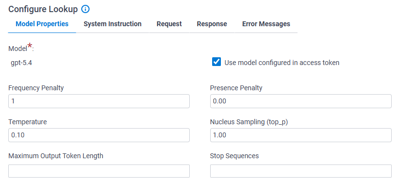
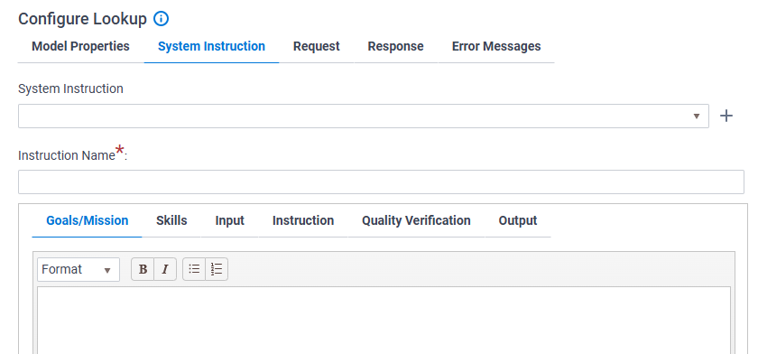
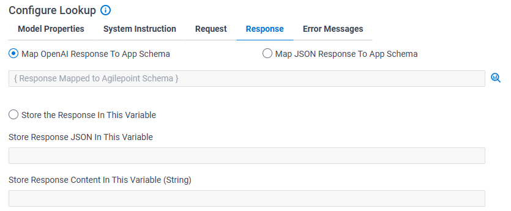
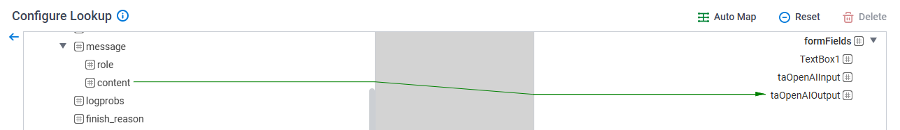

01 Global Access Token 01
進入 AgilePoint NX 管理介面，點選Add Token新增設定。

01 Global Access Token 02
點擊新增 OpenAI。

01 Global Access Token 03
輸入自定義名稱並填入從 OpenAI 官網取得的 API 金鑰(須付費)，完成全域存取設定。

02 eForm 01
在 eForm 表單設計器中，進行配置(如圖:AutoLoopUp*1、Text Area*2、Button*1)。

02 eForm 02
編輯AutoLoopUp，選擇/新增 LoopUp，並且設定Access Token(Open AI)。

02 eForm 03
配置 OpenAI 活動的輸入參數與模型屬性。
Model Properties 頁籤：調整 AI 的「性格與精準度」
Model Properties 頁籤：調整 AI 的「性格與精準度」
| 名詞項目 | 定義與作用 | 參數範圍 | 範例案例 |
|---|---|---|---|
| Frequency Penalty | 頻率懲罰。降低 AI 在一段話中重覆使用「相同字詞」的機率。 | -2.0 到 2.0 (通常設 0) | 設為 1.0：當 AI 回覆太過囉唆時，調高可增加詞彙多樣性。 |
| Presence Penalty | 存在懲罰。鼓勵 AI 談論「全新話題」，增加內容的新鮮感。 | -2.0 到 2.0 (通常設 0) | 設為 1.0：用於腦力激盪，避免 AI 繞著同一個點打轉。 |
| Temperature | 溫度。控制生成的創意程度。越低越嚴謹，越高越有創意。 | 0 到 2.0 | 0.1 (低)：合約分析、自動填表。1.0 (高)：行銷文案。 |
| Nucleus Sampling (top_p) | 核採樣。控制輸出的多樣性，只從機率累計前 P% 的詞彙中挑選。 | 0 到 1.0 | 0.1：AI 只選最穩定的詞。建議與 Temperature 二選一調整。 |
| Max Output Token Length | 最大輸出長度。限制 AI 回覆內容的總長度。 | 1 到 模型上限 | 設為 500：確保 AI 不會回傳過長廢話，節省成本。 |
| Stop Sequences | 停止序列。當 AI 產出特定的字串時，就立即中斷輸出。 | 自定義字串 | 設定為 或 Done：偵測到換行或完成標記時就結束。 |

02 eForm 04
設定輸出對應，將 AI 產生的回應寫回至表單的指定欄位中。下圖表示紅色的一定要設定
| 名詞項目 | 定義與作用 | 範例案例 (以「採購單審核助手」為例) |
|---|---|---|
| Goals/Mission | 任務目標：明確告訴 AI 它的主要任務。 | 「你的任務是檢查採購單內容是否符合預算編列規範。」 |
| Skills | 賦予 AI 專家背景或特定能力。 | 「你是一位具備 10 年經驗的財務審核員，精通企業會計準則。」 |
| Input | 告訴 AI 它會接收到哪些格式的資料。 | 「你會收到來自 AgilePoint 表單的 JSON 資料，包含 Amount 與 Department。」 |
| Instruction | 具體的 SOP 或決策邏輯。 | 「1. 確認金額是否超過 10 萬。 2. 若超過且部門為 IT，則標註為高風險。」 |
| Quality Verification | 定義輸出的品質標準或禁忌。 | 「回覆語氣必須客觀。若資料不齊全，不可自行通融，須要求補件。」 |
| Output | 規定 AI 最終產出的格式。 | 「請僅回傳 JSON：{"status": "Pass/Fail", "comment": "原因"}。」 |

02 eForm 05
請設定Form裡面的請求欄位。

02 eForm 06
請選擇Map OpenAI Response To App Schema，並點右側的放大鏡。

02 eForm 07
設定content至你的輸出欄位。

03 預覽
預覽畫面，執行結果如圖。